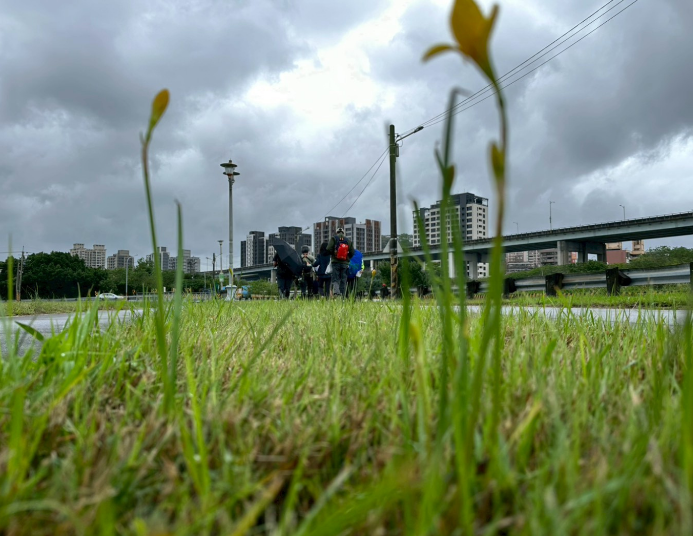
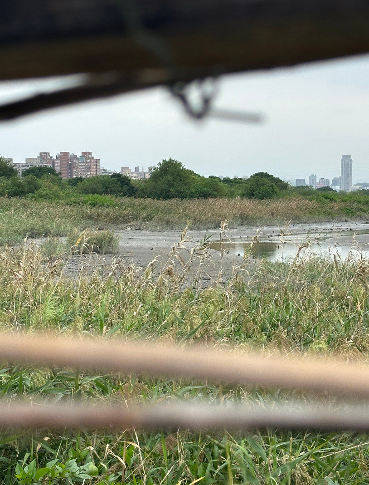
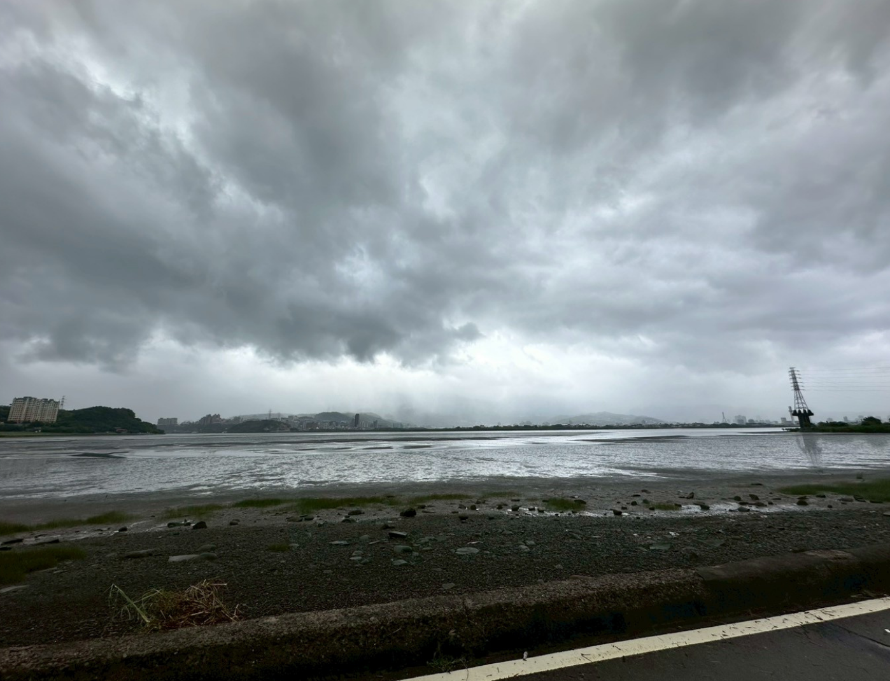
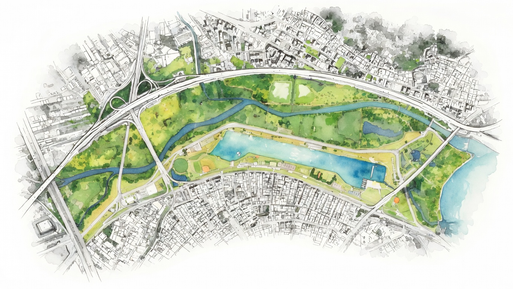

關於五股濕地
文字文字文字文字文字文字文字文字文字文字文字文字文字文字文字文字文字文字文字文字文字文字文字文字 文字文字文字文字文字文字文字文字文字文字文字文字文字文字文字文字文字文字文字文字文字文字文字文字 文字文字文字文字文字文字文字文字文字文字文字文字文字文字文字文字文字文字文字文字文字文字文字文字
更多內容 ›生態環境
詳細內容 ›文字文字文字文字文字文字文字文字文字文字文字文字文字文字文字文字

＿＿＿＿＿

＿＿＿＿＿

＿＿＿＿＿＿

特色物種
文字文字文字文字文字文字文字文字文字文字文字文字文字文字文字文字文字文字文字文字文字文字
招潮蟹
猛禽
四斑細蟌